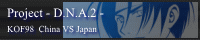

| 2007/11/7 | 現在は特にありません。 | ||||||||||||||||||||||||||||||||||||||||
| 2007/9/7 |
おかげさまで、サイト公開から4年を迎えることができました。 現在はブログのみの更新となっていますが、よければこれからもよろしくお願いしますm(_ _)m |
||||||||||||||||||||||||||||||||||||||||
| 2007/8/3 | 「闘劇2007」を左部分のメニューに加えました。 そして、「極KOF」の名で親しまれてきた沙彩さんの人気サイトが名前を変えて復活されました！ その名も「-KO←F→OREVER-」！ 従来のファンの方々はいくしかないですね(｀･ω･´) |
||||||||||||||||||||||||||||||||||||||||
| 2007/7/20 |
最近はブログを結構更新していますので、よければぜひご覧下さい。 02wikiに関しては、Duelも近いということでキャラ対策に重点を置いています。 一般的な評価での強キャラから、既出の対策をまとめていこうと思うので、こちらもよければぜひご覧下さい。まずは対キムからいきますわ(｀･ω･´) MIAが稼動を始めました。MIAのしたらば（旧・新）を読んで情報を得ましょうw また、MIAwikiも皆さんの参加をお待ちしています。 MIAはDuelの種目にもなっているので、やり込むしかないですね(｀･ω･´) Duelといえば、今回の公式サイトは前回よりも更に充実しています。まだの方はぜひいってみましょう。 福岡では、ランキングバトルがスタートしました。 サイト名「KOF RANKING BATTLE JUSTICE」 URL：http://1hp.jp/?id=kofjustice 福岡近郊の方はぜひ遠征されてみてはどうでしょうか。 '96wikiも公開してみました。中身はないですが＾＾A |
||||||||||||||||||||||||||||||||||||||||
| 2007/6/15 |
KOFMIAのしたらば、「KOF MAXIMUM IMPACT REGULATION ”A" BBS」へリンクを追加しました。 さらに、コテハン専用掲示板に、「総合掲示板」＆「KOFMIA用掲示板」を用意しました。よければぜひご利用下さい(｀･ω･´)b あと、2chのKOMIA現行スレはこちらです。 |
||||||||||||||||||||||||||||||||||||||||
| 2007/6/14 |
「KOF MAXIMUM IMPACT REGULATION ”A"」のロケテストが今週末、東京都千代田区の、秋葉原HEYにて行われます！ 近郊の方々はぜひ足を運ばれてみてはいかがでしょうか。 詳しくは公式サイトをご覧下さい(｀･ω･´) |
||||||||||||||||||||||||||||||||||||||||
| 2007/6/13 |
Duelling the KOFの公式サイトが更新されました！ 今回は携帯版にて各作品の地域枠が発表されているので、こちらでも転載させていただきます。
以下、公式サイトからのコピペ >KOF98、KOF02においての予選大会は1位のみ通過となります。 >KOFMIAの予選大会は、一部を除き、1、2位が通過という事になります。 >予選大会の日程などは、現在交渉中です。 |
||||||||||||||||||||||||||||||||||||||||
| 2007/6/12 | トップページのレイアウトなんですが、横幅を拡げすぎてしまってたので、ちょっとだけ狭くしてみました＾＾A | ||||||||||||||||||||||||||||||||||||||||
| 2007/6/11 |
ひさしぶりにレイアウトを大きく変えてみました。 これで少しは見やすくなった…かな。 |
||||||||||||||||||||||||||||||||||||||||
| 2007/5/22 |
宣伝とお知らせです。 その1：Duelling the KOF公式サイトが更新されました！ http://duel-kof.com/ 次回（5th season）の決勝大会は11月開催で、種目はKOF'98、KOF2002、そしてKOFMIAとのことです。 その2：KOFMIAのまとめwikiを作成しました。 http://www33.atwiki.jp/kofmia/ 02wiki同様、皆さんの参加をお待ちしていますm(_ _)m |
||||||||||||||||||||||||||||||||||||||||
| 2007/3/25 |
宣伝とお知らせです。 その1：KOF2002の攻略wikiを作成しています。 http://www28.atwiki.jp/kof2002/ 現在は内容がほとんどないですが、ゆくゆくは2002の攻略を扱うポータルサイトにしていきたいと思っています。 その2：KOF2002のコテハン専用掲示板を作成しています。 http://comesonobravo.hp.infoseek.co.jp/bbs-top.html 現在は総合掲示板しかありませんが、掲示板への書き込みが増え、要望をいただければキャラ別掲示板なども作成していきたいと思っています。 現在、KOF2002はやり込み勢さんとそれ以外で知識に大きな差が出てしまっています。 そして、知識が深い人もそれぞれ得意な分野とそうでない分野に分かれてしまっていると思います。 よって、皆さんで協力してポータルサイトに情報を整理して蓄積することで、結果として皆が嬉しい思いができるのではないかと思いました。 熱意のある方々のご協力を、心よりお待ちしていますm(_ _)m |
||||||||||||||||||||||||||||||||||||||||
| 2007/2/21 | 最近は調べたものをブログではなく掲示板に書くようにしています。もしブログのみご覧になっていた方は、よければ掲示板も見ていただけると嬉しいです＾＾ | ||||||||||||||||||||||||||||||||||||||||
| 2006/12/8 | どうも、放置気味で申し訳ありません＞＜； 日中戦公式サイトが公開されました！  |
||||||||||||||||||||||||||||||||||||||||
| 2006/10/14 | さらにトップページのレイアウトを変更してみました。 ［追記］ ゆみくさんがサイト名画像だけでなく、リンクバナーも作成して下さりました。 ゆみくさんありがとうございますm(_ _)m ＞リンクして下さっている方々 バナーを使っていただけると嬉しいです＾＾（直リンク推奨） （200×40） |
||||||||||||||||||||||||||||||||||||||||
| 2006/9/23 |
なんとかサイト公開から3周年を迎えることができました。 これからもどうかよろしくお願いしますm(_ _)m 3周年記念は色々考えたのですが…結局02の攻略関係がいいかなと思い、 「KOF2002判定画像いろいろ」というページを公開することにしました。 なかなか面白い判定の技も多いので、よければごらん下さいm(_ _)m あと、ずっと気になっていたトップページのレイアウトも変更してみました。 どうでしょうか＾＾A |
||||||||||||||||||||||||||||||||||||||||
| 2006/5/27 | 新コンテンツ「対談会企画」のトップページを作成しました。 | ||||||||||||||||||||||||||||||||||||||||
| 2006/4/26 | トップページのレイアウトを変更しましたー。（その後数日間微調整を続けました） | ||||||||||||||||||||||||||||||||||||||||
| 2006/2/4 |
「Duelling the KOF」の
対戦動画DVD販売開始！
|
||||||||||||||||||||||||||||||||||||||||
| 2005/12/21 | KOF’98日韓戦公式サイト↓ |
||||||||||||||||||||||||||||||||||||||||
| 2005/9/24 |
30万ヒットを突破しました(｀・ω・´) みなさん、これからもよろしくお願いしますm(_ _)m |
||||||||||||||||||||||||||||||||||||||||
| 2005/9/14 | 墓標さんの美形会議がメジャーデビューを果たされました。黒タカさん＆美形キャラの皆さんおめでとうございますm(_ _)m | ||||||||||||||||||||||||||||||||||||||||
| 2005/9/5 |
お陰さまで、なんとか2周年を迎えることができました、ありがとうございますm(_
_)m これからも地道に更新していきたいと思いますので、皆さんよろしくお願いします。 |
||||||||||||||||||||||||||||||||||||||||
| 2005/8/10 |
Web拍手（8月6日） ＞このサイト、とても参考になります。 コメント下さった方、ありがとうございます。 こういうメッセージをいただけると、俄然やる気になったりします。 返信遅くなり申し訳ありませんでしたm(_ _)m |
||||||||||||||||||||||||||||||||||||||||
| 2005/6/22 | KOF2002の各キャラの連続技をアップ中です。 Q発動絡みの実戦連続技情報を募集中です。 ↑使ってないキャラは全然わからないです…。 |
||||||||||||||||||||||||||||||||||||||||
| 2005/6/8 | Duelling the KOF-2nd season-の公式サイトが公開されました。 | ||||||||||||||||||||||||||||||||||||||||
| 2005/6/5 | Duelling the KOF-2nd season-の公式サイトが公開されました。 KOFXI、ロケテスト中です。 |
||||||||||||||||||||||||||||||||||||||||
| 2005/6/4 | KOFXI、ロケテスト中です。 | ||||||||||||||||||||||||||||||||||||||||
| 2005/5/23 | 20万ヒットを記念して（？）、以前から気になっていたKOF’98の主要技のヒットorガード時の硬直差関係を調べていこうと思います。 ↑Duellingの開催も近いですし、予選終了までには現在の02の硬直差程度までには仕上げたいと思いますね。 ※優先して調べて欲しい技に関しては、掲示板でリクエストを受け付けます。 |
||||||||||||||||||||||||||||||||||||||||
| 2005/5/16 | おかげさまで、昨日の早朝に20万ヒット達成しましたー。皆さんありがとうございますm(_
_)mさて、現在KOFXIのロケテが行われています（終了したんでしょうか？）。 ⇒サイト「Channel KOF」さん＆「拳新報」さんなどでかなり詳しくロケテレポートされていますのでまだご覧になってない方はぜひ検索して訪問してみて下さい。 |
||||||||||||||||||||||||||||||||||||||||
| 2005/5/14 | おかげさまで、もうすぐ20万ヒットです。 BURIAL －土葬－さんに抜かれてしまいました(´･ω･｀)＞5/12にWeb拍手下さった方 すいません、今気がつきました。土矛さんのサイトのヒット数の伸びは予想不可能でした…。 たぶん1日2000近く行ってた時期もあるんじゃないでしょうか。 |
||||||||||||||||||||||||||||||||||||||||
| 2005/5/6 | おかげさまで、もうすぐ20万ヒットです。 20万ヒットに合わせて何かやろうということはないんですが、なんとかBURIAL －土葬－さんより先に到達できるよう頑張ります。 ＞土矛さん このままだと確実に先に20万ヒットされそうなので書いてみただけなので、もし不快に思われたらすいません…(´･ω･｀) |
||||||||||||||||||||||||||||||||||||||||
| 2005/4/27 | 現在KOF2002の連続技ページを作成中です。今日更新したビリーの連続技ページくらいならどんどん作れる感じがしました。 今後作成＆更新するキャラについて、連続技のコツや載ってない連続技についての情報があればぜひ教えていただけると嬉しいですm(_ _)m あと、クローン京＆アンヘルについては、ho-rinさんのサイト＆BABさんのサイトに詳しく書かれているので、よければそちらをご覧下さい。 さらに言えば、SIKURUUさんのサイトはもとより、蒼月さんのサイト＆通称＜D＞さんのサイトに既にかなり書かれてたりします…。 |
||||||||||||||||||||||||||||||||||||||||
| 2005/4/20 | ゆみくさんのサイト「YUmix」で現在更新されている「立ち回り講座」のシリーズが超オススメです。 講座の内容はもちろん、自分がやりたかったことをそのまま形にされているのでページ作成としても非常に勉強になります。 特に立ち回り関係で何かしら問題を感じている人はぜひ訪問されることをオススメします！ |
||||||||||||||||||||||||||||||||||||||||
| 2005/4/19 | ［大会告知］ リンクさせていただいている「JASPA AMUSEMENT STORE」さんが閉店されてしまうそうです…。 一度も訪問できなかったのが心残りですが、救護班の方などの主催による、KOF’95＆餓狼SPの大会を5月4日に行われるそうですので、近県の方はよければぜひご参加下さいm(_ _)m あ、肝心の大会に関するページのURLはこちらです。 |
||||||||||||||||||||||||||||||||||||||||
| 2005/4/6 | ・携帯電話から訪問して下さる方のために、携帯用の簡易トップ（こちら）＆携帯用掲示板（こちら）を作成しました。 ・［リンクについて］の文章を追加しました。 |
||||||||||||||||||||||||||||||||||||||||
| 2005/3/31 | 過去ログ保存機能のため、掲示板をしたらばBBSさんに変更しました。 | ||||||||||||||||||||||||||||||||||||||||
| 2005/2/19 | ・SIKURUUさんに許可をいただけたので、やるなら極めてた？さんの餓狼連合掲示板に直リンクをはらせていただけることになりました。 | ||||||||||||||||||||||||||||||||||||||||
| 2005/2/10 | （↓NW稼動直後から今日まで掲示していた文章） 現在、KOFNWの各キャラ情報（前作※からの変更点・連続技など）を募集中です。 ※前作とは、KOF2003を除いた直近の登場作品のことです。 |
||||||||||||||||||||||||||||||||||||||||
| 2005/1/25 | ・黒タカさん運営のサイト「墓標」を参考に、トップページにブログを置いてみました。 | ||||||||||||||||||||||||||||||||||||||||
| 2005/1/7 | ・遅くなりましたが、あけましておめでとうございます。今年ものんびりと更新していこうと思います。 ・ずっと放置していたKOF2002の各キャラのJ攻撃の使い方についてページを作ってみました。性能評価のページは客観的に作成しようと思ったのですが、今回のページは攻略の要素がかなり強く、表になじまないと思いなかなか形式を決定できなかったのですが、まずは作成してみようと思い公開してみました。 ↑J攻撃の性能を教えていただいているキャラはなるべく早く補完していきたいと思ってます。 |
||||||||||||||||||||||||||||||||||||||||
| 2004/12/16 | ・「やるなら極め ・KOF2002反撃確定技早見表の反撃技のリーチの基準を作成しました。 ・KOF’94RE－BOUT発売に備え（？）、KOF’94ページの編集＆脅威現象などのページの追加を行う予定です。 ・新しくページを作成するほどでもない発見などは、「雑記」に書いていきますので、よければご覧下さい。 ・ﾚｯﾀﾞｨさんのサイトに置かれているKOF’95の動画が頻繁に更新されています。うなるような立ち回り＆テクニックを見られます。 |
||||||||||||||||||||||||||||||||||||||||
| 2004/11/28 | BABさんのサイトにリンクさせていただきました。 ↑詳しい紹介は後日追加させていただきます。 |
||||||||||||||||||||||||||||||||||||||||
| 2004/11/7 | 1．「Duelling the KOF DVD COLLECTION vol.1」を購入しました。 2．KOF2002反撃技表にアンヘルのUCの硬直は無事調べ終わりました。 |
||||||||||||||||||||||||||||||||||||||||
| 2004/10/25 | リンクに さん（管理人：さん） を追加しました。訪問されると、癒されるとともにNWへのやる気が増えるかも？ ぜひ訪問してみて下さい。 あと、KOF2002反撃技表にアンヘルのUCの硬直を調べてみようと思います（あくまで予定ですが）。 |
||||||||||||||||||||||||||||||||||||||||
| 2004/10/13 | リンクに ［LUNA・NERA］さん（管理人：Nachtseiteさん） ガロスペ愚連隊さん（管理人：グレンさん） を追加しました。どちらのサイトもかなり濃い攻略をされていますので、ぜひ訪問してみて下さい。 私信： ＞Nachtseiteさん 正式なリンクが遅くなってしまい、申し訳ありませんでした。 |
||||||||||||||||||||||||||||||||||||||||
| 2004/10/11 | |
||||||||||||||||||||||||||||||||||||||||
| 2004/9/21 | とりあえずKOFNWの全キャラの連続技をアップし終わりました（まだまだ荒い作りになってますが）。 これからは、KOFNWに限定せず色んなゲームについてまとめていこうと思います。 ↑KOFNWに関しては、（簡易）対戦攻略とクラッシュ攻略をチマチマとやっていこうと思います。 ↑あと、KOF’95の対戦動画の再アップもなるべくやっていこうと思います。 |
||||||||||||||||||||||||||||||||||||||||
| 2004/9/13 | 1． 叩き台としてKOFNWの各キャラの連続技ページを作成しています。確認された連続技などあれば、掲示板かメールにて教えて頂けるとうれしいです。 2． 9月15日にゲームセンタージャスパさんでKOF’95対戦会（動画収録含む）があります（詳しくは救護板さんに書かれています）。興味を持たれた方は参加されてみてはどうでしょうか？ また、昔作成してほったらかしにしていたKOF’95脅威現象をアップしました。’95特有のテクニックなどについて軽くまとめているので、よければ見てやって下さい。 ↑今でも現役の方々には常識なことばかりだとは思いますが… |
||||||||||||||||||||||||||||||||||||||||
| 2004/9/5 | サイト公開から今日で1年になります。訪問して下さった皆さん、ありがとうございました。 まだまだ至らない点が多く、サイト構造としても欠陥が多いとは思いますが、少しずつ改善していこうと思いますので、これからもよろしくお願いいたします。 |
||||||||||||||||||||||||||||||||||||||||
| 2004/9/1 | 今月号のアルカディアを購入しました。 KOFNWの記事なんですが、ヒート発動システムの解析や、アンディの強幻影不知火が弱に比べてめくり性能が高いなど、予想以上にいい攻略がされている印象を受けましたが、JDfの解析などは自分が調べていたものとあまり変わらない結果だったのでやや残念でした。 自分のプレイを通じて得たものや、したらばBBSさんやアルカディアの情報をまとめていこうと思います。 |
||||||||||||||||||||||||||||||||||||||||
| 2004/8/18 | 1．全国大会を観戦してきました。 2．サイトがデリられてしまったので新URLを取得して復活しました（このページです）。←すいません、お騒がせしました…。 3．対戦動画については、動画置き場を確保できるまで少しの間お待ち下さい。すいません。 ↑置き場を確保できたので、なんとか再開できました。 |
||||||||||||||||||||||||||||||||||||||||
| 2004/7/29 | 自分の家の近くでも、今日からKOFNEOWAVEが稼動しはじめるのでページを作成しました。各キャラの技解析・基本戦法・連続技などを教えていただけるとうれしいです。 | ||||||||||||||||||||||||||||||||||||||||
| 2004/7/25 | リンクに土矛さん運営のBURIAL －土葬－さんを追加させていただきました。対戦格闘ゲーム系以外のサイトにリンクさせていただくことは控えようかと考えていたんですが、土矛さんのサイトは日記が特に面白く、皆さんのぜひご紹介したいと思い、リンクさせていただきました。詳しい紹介はリンクのページをごらん下さい。 | ||||||||||||||||||||||||||||||||||||||||
| 2004/7/19 | クラッシュ攻略、なんとかリョウ版をあげました。リョウの「受け」に関してはいまいち性能がわかってないので書くのはやめておきました。「受け」成功＞キャンセル覇王翔吼拳とか有効そうですねー。 自分のすごい苦手な紅丸のクラッシュを作ってなかったことに気づいたので次は対紅丸にしようと思います。自分が苦手なポイントを列挙するだけになりそうですが…。 （あと、対戦動画のページの対戦動画15を再アップしておきました。） |
||||||||||||||||||||||||||||||||||||||||
| 2004/7/16 | クラッシュ攻略を進める気でいたんですが、なかなか時間が取れず進んでおらず、すいません。とりあえずということでクーラ版をあげました。近日中にリョウ版もあげる予定です。 | ||||||||||||||||||||||||||||||||||||||||
| 2004/7/2 | ネオウェーブが出るみたいなので、それまでになるべくKOF2002のクラッシュ攻略を進めてみようと思います。 | ||||||||||||||||||||||||||||||||||||||||
| 2004/6/19 | すいません、対戦動画のページの動画がいくつか消えてしまっていたので再アップしておきました。気づくのが遅くなり申し訳ありませんでした。 | ||||||||||||||||||||||||||||||||||||||||
| 2004/6/8 | 昨日から、「救護班」さん主催によるKOF’95対戦動画を「対戦動画」のページにおいています。動画を見てくださった感想や、わからない部分などありましたら、掲示板に書き込んで下さるとうれしいです。 | ||||||||||||||||||||||||||||||||||||||||
| 2004/6/5 | マコさんへの私信：02ジョーの強黄金のカカトの使い道を思いつきました。詳しくはKOF2002ジョー攻略（必殺技解析）をごらん下さい。 | ||||||||||||||||||||||||||||||||||||||||
| 2004/6/3 | 最近対戦自体をしてなくて、立ち回りの基本がおろそかになっているので、確認の意味を込めて、KOF2002のセオリー部分について気づいた部分をまとめていこうと思います。 | ||||||||||||||||||||||||||||||||||||||||
| 2004/5/30 | カウンタが30000超えました。皆さんありがとうございます。 | ||||||||||||||||||||||||||||||||||||||||
| 2004/5/21 | 我ながら掲示板にメモを書き込みすぎだと思うので、メモ用掲示板を用意しました。 | ||||||||||||||||||||||||||||||||||||||||
| 2004/5/17 | KOF2002のコンテンツ数、あっさりとKOF’94のを抜いてしまいました。でもまだまだ増えるでしょう。 | ||||||||||||||||||||||||||||||||||||||||
| 2004/5/15 | KOF2002のコンテンツがKOF’94と並びました。しかもKOF2002は各キャラのクラッシュ攻略をする予定なので更に増えそうな予感…。 | ||||||||||||||||||||||||||||||||||||||||
| 2004/5/10 | 「02クーラの強クロウ地上ヒット＞受け身後のキャラ毎の硬直差」は一応調べました。総合メモにおいておきますが、いずれクラッシュのページに移そうかと思っています。 | ||||||||||||||||||||||||||||||||||||||||
| 2004/5/9 | とりあえず本命の試験終了しました。ということでまたちびちびと更新していきたいと思います。とりあえずは「02クーラの強クロウ地上ヒット＞受け身後のキャラ毎の硬直差」「02反撃技の各キャラ別ページ」「98Gファントムネタ」「02ゲージ関連」「02キャラ別データ」なんかが候補です。 | ||||||||||||||||||||||||||||||||||||||||
| 2004/4/20 | すいません、5月の上旬～中旬にかけて国家試験受験のため更新が非常に少なくなると思います（試験勉強の逃避行動で更新を少しする程度になると思います）。 ただ、KOF2002テリーの技解析＆連続技は未完成すぎるので、ある程度形になるまでは優先的に更新すると思います。 | ||||||||||||||||||||||||||||||||||||||||
| 2004/3/27 | cgiboyさんのカウンタを使用させていただくことにしたんですが、初期値を16161として今までのカウンタ数値と同値にしてみたんですが、どんどんズレが出てきています（今までのカウンタは最下に移動しました）。 | ||||||||||||||||||||||||||||||||||||||||
| 2004/3/22 |
スコアさんのサイト（百スコマスカー）で知ったのですが、Duneさん＆キッコーさん＆スコアさん＆4℃さんが、
という、「KOF’98／2002による全国大会」を開催されるとのことです。特に現在でも’98＆2002が現役の方々にとってはかなり面白そうな大会になると思いますので、皆様参加されてみてはどうでしょうか。 |
||||||||||||||||||||||||||||||||||||||||
| 2004/3/20 | 今は家で色色衣を聴きながらちびちびとKOF’97をやっているんですが、最近のKOFの知識を使って昔のゲームをすると新しい発見があってなかなか面白いですね。それと今考えて見ますと’97＞’98への調整はかなり見事だったんだな…と思い知りました（余裕があれば、『KOF’96・’97・’98の軌跡』なるページでも用意して自分なりの理由を説明するかも知れません）。 | ||||||||||||||||||||||||||||||||||||||||
| 2004/3/14 | 作りかけのページを（仮）完成させてUPしていこうと思います。今回のKOF’98ジョー攻略もその一環です（KOF’97ジョーはこの’98ジョーのページを少し変えればすぐできますね）。 あと、各キャラごとのアテナの弱サイコボールを飛び越えやすくなる中J攻撃も調べてみようと思います（＜これは自分の感覚が前面に出た内容になると思いますので、突っ込み大歓迎です）。 |
||||||||||||||||||||||||||||||||||||||||
| 2004/3/11 | （この間ゲーセンで話かけて下さった方への私信） ＞いつそこのゲーセンにいるか ほぼ毎日午後4時半から15分ほどいると思いますので、またボコってやって下さい。自分はとりあえず暴れや基本的なミスを減らしてまともな対戦になるようにチューニングしておきますね。 ＞このサイトで何故フレームなどを言及できるのか KOFシリーズは通常技は基本的に全て弱攻撃用＆強攻撃用＆ふっとばし攻撃用のヒット＆ガード硬直が一定のものに定められているため、似非南原さんのサイトのデータを参照して足し算or引き算すれば簡単にわかります。必殺技は個別に設定されているので、実際に反撃できた技との差し引きで硬直などのデータを得ています。 具体的に通常技をガードさせた場合の硬直差について書いておきますと、弱攻撃用or強攻撃用のガード硬直－｛攻撃持続フレーム＋戻りのフレーム－1｝＝攻撃判定が出た瞬間をガードさせた場合の有利フレーム（硬直差）になります。 KOF2002のジョーの屈みAは攻撃持続が4フレームで戻りが4フレームで相手の弱攻撃のガード硬直が9フレームのため、9－｛4＋4－1｝＝＋2となり、ジョーはガード時に2フレーム有利が得られるということになります。 また、地上通常技は弱強ともにヒット時の相手の硬直はガード時に比べて2フレーム伸びていますので、KOF2002のテリーの遠距離立ちDをヒットさせたらほんの少し有利でガードさせたらほんの少し不利ということと、ヒット時とガード時の相手硬直が2フレームということから考えて、KOF2002テリーの遠距離立ちDはヒット時1フレーム有利でガード時1フレーム不利ということがわかります。 （長文になってしまいすいません。このサイトのタイムチャート作成についてと見比べられるとよりわかりやすいと思います。） |
||||||||||||||||||||||||||||||||||||||||
| 2004/2/23 | KOF’96を購入しましたので、KOF’96関連の解析を始めます（2002の餓狼チーム攻略も作成中です）。 | ||||||||||||||||||||||||||||||||||||||||
| 2004/2/20 | KOF2002の反撃確定技早見表をメインに更新作業をしていますが、一人で作業していると気が滅入ってくるので気分転換も兼ねてKOF2002のテリー＆アンディの連続技をUPしようと思います。 | ||||||||||||||||||||||||||||||||||||||||
| 2004/2/13 | 1．近所のゲーセンにKOF2002が復活しました。 2．気分転換に連続技のページをUPしてみました。 |
||||||||||||||||||||||||||||||||||||||||
| 2004/2/11 | やっとUPできる状況になったので少しだけ更新しておきます。KOF2002餓狼チームの攻略は |
||||||||||||||||||||||||||||||||||||||||
| 2004/2/6 | 1．アルカディア2月号を買いました。このサイトのKOF2003のシステム解析（こちら）はアルカディアで解析記事が出るまでの予定でしたが、KOF2003攻略で予想通り投げ関係やリバサ関係のシステム解析をされていましたので、このサイトではシステム関係の調査は当分行わない予定です（何かネタを発見した場合はこの限りではないです）。 2．KOF2002ジョーの技解析の記事がある程度できてきたので気合いが続けば今日中にUPできると思います。（＞無理でした…。） |
||||||||||||||||||||||||||||||||||||||||
| 2004/2/2 | 近いうちにKOF2002の餓狼チーム（テリー＆アンディ＆ジョー）の攻略を始めたいと思います（まずは技解析＆連続技です）。 | ||||||||||||||||||||||||||||||||||||||||
| 2004/1/6 | みなさん、あけましておめでとうございます。年末年始はサイトの更新ができない状態であったため年始のご挨拶が遅くなって
しまいました。 今年ものんびりとゲームについての解析などを行って行きたいと思いますので、皆さんよろしくお願いいたします。 |
||||||||||||||||||||||||||||||||||||||||
| 2003/12/22 | なんかKOF2003の攻略よりもKOF2002のキム・ラルフ・裏クリスやKOF’94～2002のテリー・アンディ・ジョーの攻略の方に興味が移っています。 思ったんですが、KOF2003でリバサ必殺技を狙う場合、「必殺技のレバー部分入力＋↙で屈みガードの保険をかける＞タイミングを見計らってボタン」というのが有効なんでしょうか。 |
||||||||||||||||||||||||||||||||||||||||
| 2003/12/16 | 通常技や必殺技の発生・持続・戻りなどの表現をタイムチャート形式で表現しようと思います。（詳しくはこちらへ） |